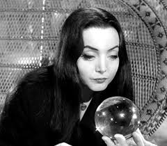

Família Addams transcende gerações como um ícone da excentricidade e uma celebração da individualidade. Em um mundo que valoriza a conformidade, os Addams abraçam o diferente, o macabro e o bizarro com um entusiasmo contagiante. Sua peculiaridade não é um defeito, mas sim a força que os une, criando uma dinâmica familiar única e profundamente amorosa.
Gomez, o patriarca, é um exemplo de paixão avassaladora e lealdade inabalável a sua Morticia, uma mulher elegante e enigmática, que cultiva um jardim de plantas carnívoras com o mesmo carinho que dedica à sua família. Sua relação, longe de ser convencional, é um turbilhão de romance sombrio e cumplicidade inquebrantável. Eles são a prova de que o amor pode florescer em qualquer solo, mesmo no mais fértil dos cemitérios.
Wandinha, a filha, é a personificação da rebeldia inteligente. Com sua frieza calculada e seu olhar penetrante, ela desafia as normas sociais com uma sagacidade que a torna uma personagem icônica. Seu fascínio pela morte e pelo sobrenatural não é sinônimo de escuridão, mas sim uma expressão de sua individualidade complexa e fascinante. Feioso, o irmão mais novo, é a antítese da irmã, um garoto travesso e cheio de energia, que encontra alegria nos atos mais inusitados e perigosos.
Tio Chico e Vovó Addams completam o quadro familiar com suas próprias peculiaridades. Chico, com sua mania de inventar explosivos, e Vovó, com seus encantamentos e sua aparente imortalidade, adicionam um toque de caos e mistério à já peculiar família. Apesar de suas excentricidades, cada membro contribui para a coesão familiar, demonstrando que a diversidade é uma riqueza, não um problema.
Família Addams não se limita a ser uma comédia de costumes. Ela é uma metáfora da sociedade, um espelho que reflete nossas próprias inseguranças e preconceitos. Ao abraçar o que é diferente, a família nos convida a questionar as normas sociais e a celebrar a beleza da individualidade. Em um mundo cada vez mais padronizado, a Família Addams é um lembrete de que a diversidade é a força que nos enriquece e nos torna únicos. Sua mensagem é simples, mas poderosa: ame-se como você é, e ame aqueles que são diferentes de você. Afinal, a verdadeira família é aquela que te aceita, mesmo que você tenha um gosto peculiar por aranhas e caveiras.
.jpeg)
Família Addams é um filme que não pode faltar